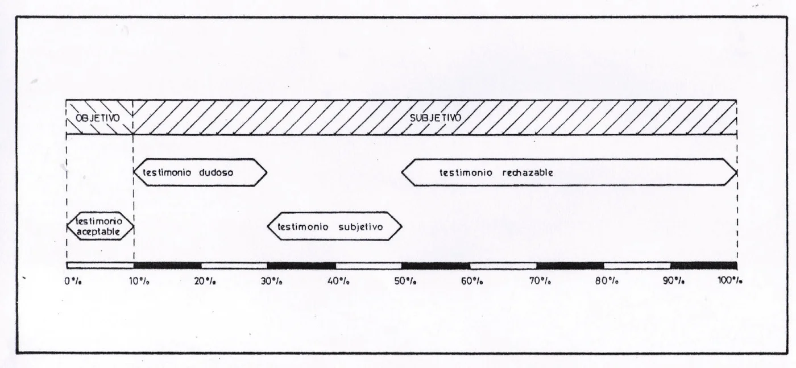

Il ne nous est pas toujours possible d'acquérir par nous-mêmes la connaissance de l'existence de quelque chose, et nous devons alors recourir au témoignage d'autrui. Pour que celui-ci ne nous induise pas en erreur, deux conditions sont nécessaires : premièrement, que le témoin ne soit pas trompé ; deuxièmement, qu'il ne veuille pas nous tromper. BalmesJaime L. Balmes (), Balmes, Jaime L.: El criterio, Madrid: Espasa-Calpe, . Original espagnol : No siempre nos es dable adquirir por nosotros mismos el conocimiento de la existencia de un ser, y entonces nos es preciso valernos del testimonio ajeno. Para que éste no nos induzca a error son necesarias dos condiciones: primera, que el testigo no sea engañado; segunda, que no nos quiera engañar.
Une méthode est proposée pour quantifier et noter la valeur de la subjectivité du témoignage d'ovni. Quatre critères, fondés sur les données recueillies par l'enquêteur de terrain, donnent forme à un algorithme établissant un « indice de subjectivité ».Cet article faisait à l'origine partie d'un essai plus long intitulé « Medida de la subjetividad del testimonio », publié dans Ballester-Olmos, V.J.: Investigación OVNI, Barcelona: Plaza & Janés, , pages 234-242.
Le Groupe d'Études des Phénomènes Aérospatiaux Non Identifiés (GEPAN)Renommé en GEIPAN, Groupe d'Études et d'Informations sur les Phénomènes Aérospatiaux Non-identifiés, https://www.cnes-geipan.fr/ français, rattaché au CNES, a conçu un système quantitatif pour exprimer le degré de subjectivité du témoignage humain appliqué aux signalements d'ovnis Jimenez, Manuel: Les Phénomènes Aérospatiaux Non-Identifiés et la Psychologie de la Perception, GEPAN Note Technique No. 10, CNES No. 294, GEPAN (Toulouse), . Fondé sur l'interrelation d'une série d'éléments, il fournissait une mesure numérique de cette subjectivité. Ce modèle situait chaque cas sur un continuum établissant la « probabilité que les éléments subjectifs soient réduits au minimum » (PESM). Ce système était auto-évalué à l'aide de trois critères : la multiplicité des témoins, la concordance des données d'observation, et l'effet sur les idées préconçues du témoin. Apparemment, le GEPAN a ensuite abandonné ce modèle au profit d'un examen plus détaillé de chaque signalement d'ovni.
L'idée du GEPAN est valable sur le plan conceptuel mais, à notre avis, elle peut être améliorée. Principalement parce que ses deux premiers critères faisaient déjà partie des paramètres de notre propre « indice de certitude » Ballester-Olmos, V.J., and Miguel Guasp: “Standards en la evaluación de los informes OVNI,” in Los OVNIS y la Ciencia, Barcelona: Plaza & Janés, , pp. 129-146. Translated as “Standards in the Evaluation of UFO Reports,” in The Spectrum of UFO Research, Mimi Hynek (ed.), Chicago, Illinois: J. Allen Hynek Center for UFO Studies, , pp. 175-182 Groff, Terry: “MUFON Case Management System. Ballester-Guasp Report Evaluator,” (online JavaScript calculator) Johnson, Jerold: “Ballester-Guasp Evaluation of Completed Reports,” in MUFON Field Investigator´s Manual, Walter H. Andrus, Jr. (ed.). Seguin, Texas: Mutual UFO Network, Inc., , pp. 214-221. En maniant de nouveaux concepts, nous répondrons au besoin de développer un modèle valable pour normaliser la définition et l'évaluation des cas d'ovnis et, en premier lieu, de disposer d'une mesure de la subjectivité d'un signalement, qui complète l'indice de certitude déjà cité.
La nouvelle méthode à suivre consiste à mettre en évidence un ensemble d'indications positives, issues d'un raisonnement logique, dont l'absence d'une seule signifiera une rupture de la fiabilité du signalement et de celui qui le rapporte. Le suivi de ces facteurs sera par conséquent incontournable pour les enquêteurs de terrain au moment de leur travail, afin de l'optimiser.
Nous pensons qu'il existe certains niveaux distincts par rapport auxquels nous établissons les diverses conditions sine qua non pour que le témoignage humain mérite la confiance ; cette conclusion, ainsi que les niveaux concernés, se déduisent du fait qu'éliminer l'inconnue de savoir si le témoin est trompé ou trompeur revient à minimiser l'incertitude que nous avons sur l'événement ou, inversement, à maximiser la certitude que nous en avons. Les niveaux en question sont la cohérence des informations fournies, la personnalité propre du témoin, l'impact de l'événement allégué sur ses croyances et, enfin, la psychophysiologie du témoin.
Par conséquent, afin de quantifier la probabilité de subjectivité de l'information sur un ovni, nous proposons le modèle suivant :
Critère CI : il indique le niveau de concordance et de cohérence des témoignages.
Le poids (`W`) sera :
| `W_i` | |
|---|---|
| Cohérence interne du récit : | 1 |
| Manque de cohérence : | 0 |
| Version unique des faits : | 1 |
| Versions différentes : | 0 |
Critère CII : il décrit la personnalité et le comportement du sujet par rapport au sujet de référence.
| `W_i` | |
|---|---|
| Antécédents de notoriété : | 0 |
| Absence d'antécédents : | 1 |
| Exploitation de l'événement ovni : | 0 |
| Absence d'exploitation : | 1 |
| Intérêt pour les sujets « occultes » : | 0 |
| Absence d'intérêt : | 1 |
| Expériences ultérieures : | 0 |
| Aucune autre expérience : | 1 |
Critère CIII : il désigne l'impact du cas sur les croyances du témoin (le fait que les affirmations du témoin puissent apparaître comme un renforcement suspect de ses croyances personnelles sur le phénomène ovni, son existence, sa nature, etc.)
| `W_i` | |
|---|---|
| Renforcement de croyances positives ou négatives : | 0 |
| Absence, maintien ou inversion de croyances positives ou négatives sur les ovnis : | 1 |
Critère IV : il mesure les aspects psychophysiologiques du sujet qui perçoit le phénomène.
| `W_i` | |
|---|---|
| Existence de troubles mentaux : | 0 |
| Absence de troubles mentaux : | 1 |
| Indices de tension, de stress, etc. : | 0 |
| Absence de tels indices : | 1 |
| Antécédents médicaux inhabituels : | 0 |
| Absence d'antécédents médicaux inhabituels : | 1 |
Les valeurs maximales (M) et minimales (m) qui peuvent être atteintes sont :
| CI | CII | CIII | CIV | Total | |||||
|---|---|---|---|---|---|---|---|---|---|
| M | m | M | m | M | m | M | m | M | m |
| 2 | 0 | 4 | 0 | 1 | 0 | 3 | 0 | 10 | 0 |
À leur tour, les ensembles de critères n'ont pas tous la même valeur intrinsèque. Notre pondération (`v`) est la suivante :
| `v_i` | |
|---|---|
| CI | 40 % |
| CII | 20 % |
| CIII | 10 % |
| CIV | 30 % |
À notre avis, ces différents pourcentages donnent le poids relatif de chacun des critères pour l'évaluation du témoignage humain dans les observations d'ovnis de type rencontre rapprochée.
Nous cherchons précisément à créer une tabulation numérique des critères ci-dessus, afin qu'une notation mathématique puisse exprimer la subjectivité (ou l'objectivité) du témoignage humain appliqué aux événements ovnis de haute étrangeté. Un tel indice engloberait les valeurs données ci-dessus en une seule formule. Nous pensons avoir trouvé une expression de cet indice de subjectivité (`S`) de la manière suivante :
`S = 1 - [sum_(i=I)^(IV) (W_i - m_i)/(M_i - m_i) v_i]`
Où :
Une version plus simple de la formule ci-dessus, sous forme développée, est la suivante :
`S = 1 - (0.2 * W_I + 0.05 * W_(II) + 0.1 * W_(III) + 0.1 * W_(IV))`
ce qui indique que l'indice de subjectivité du témoignage, noté (`S`), est égal à la somme des différents poids relatifs des quatre critères, dûment ajustés par certains coefficients. Plus la valeur trouvée est élevée, plus la subjectivité du témoignage est grande.
L'indice (`S`) ainsi obtenu a une plage de variation comprise entre 0 et 1. L'application de cet indice à une variété de situations différentes permet de l'étalonner, ce qui nous conduit à interpréter simplement sa valeur lorsqu'on l'applique à un signalement d'ovni particulier.
La figure 1 montre graphiquement la plage de l'indice exprimée en pourcentage, de 0 % à 100 %. (Évidemment, une valeur `S = 0.50`, par exemple, équivaut à une valeur d'indice de 50 %.)

Légendes :
Seuls les témoignages d'une valeur inférieure à 10 % peuvent être considérés comme des témoignages objectifs, c'est-à-dire des témoignages qui, dans des conditions normales, devraient être acceptés en raison de leur faible subjectivité. Au-delà de cette valeur et jusqu'à un indice de 30 %, les cas ont une apparence normale mais contiennent différents éléments qui font peser un doute raisonnable sur l'intégrité du témoignage. Entre 30 % et 50 % se trouvent les témoignages qui sont peu sûrs sur le fond et la forme et ne renvoient pas à une réalité extérieure ; il semble y avoir des motivations qui présentent de forts symptômes de subjectivité. Au-delà de 50 %, le témoignage doit être écarté, car il n'y a pas la moindre confiance dans l'intégrité du témoignage du témoin.
Nous pensons que cette proposition est un outil pratique sur la voie d'une étude scientifique des signalements d'ovnis. Si les enquêteurs de terrain incluent les sous-critères ci-dessus dans leur travail d'enquête habituel, un événement ovni présumé sera considéré comme valable pour un examen plus approfondi lorsque son paramètre de subjectivité respectera les valeurs indiquées ci-dessus. La disponibilité de ces paramètres quantifiables nous permet de faire un pas en avant et nous évite de rester à la traîne d'événements qui peuvent être interprétés à l'aide des sciences analytiques.
À Richard W. Heiden, pour la relecture de la traduction anglaise.